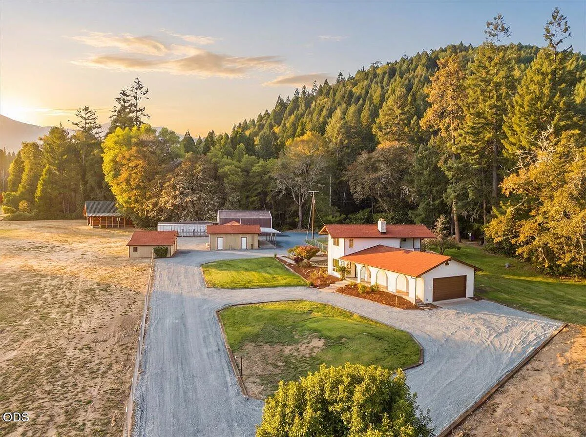
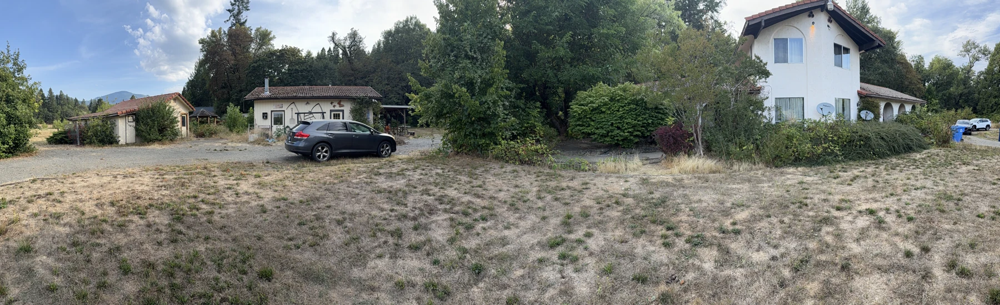

4881 Fish Hatchery Road
Fish Hatchery,
renewed.
The transformation of a property.
The work that made it possible.

Before · September 2025Then. During. Now.
A transformation,
room by room.
Rooms filled with belongings. Overgrown grounds. Outbuildings with little room to move. The photographs tell the story of what changed.
The rehabilitation began in January 2026, with credit to Keith, Harley, and Jeremiah.
Compare the spaces below, or open any photograph for a closer look. The before and after views were taken from different positions.
A new arrival.
The familiar arches and two-story center come into view as the planting and grounds are cleared.
Room to breathe.
The staircase and arched passage anchor both views. Cleared floors and bright surfaces reveal the space around them.
July 29, 2026
In the middle
of the work.
A moment between the before and after: the living room with flooring down and tools and materials still in place.
The rehabilitation begins.
July 29, 2026Work underway, captured in this photograph.
The heart of the house.
From tile counters and a crowded island to clear surfaces, new finishes, and an open view through the kitchen.
A closer look
Space for
the everyday.
The corner windows, kitchen sink, and pantry in the finished house.
Beyond the house
The transformation
continued outside.
The workshop and barn tell another part of the story.
A place to work again.
The barrel stove, sink, and wood cabinets remain recognizable. The floor space around them is open once more.
The scale becomes clear.
Equipment and stored belongings once filled the barn. The finished view reveals its floor area and exposed timber structure.
The finished property
Take it all in.
More of the house, the outbuildings, and the landscape around them.
With credit to